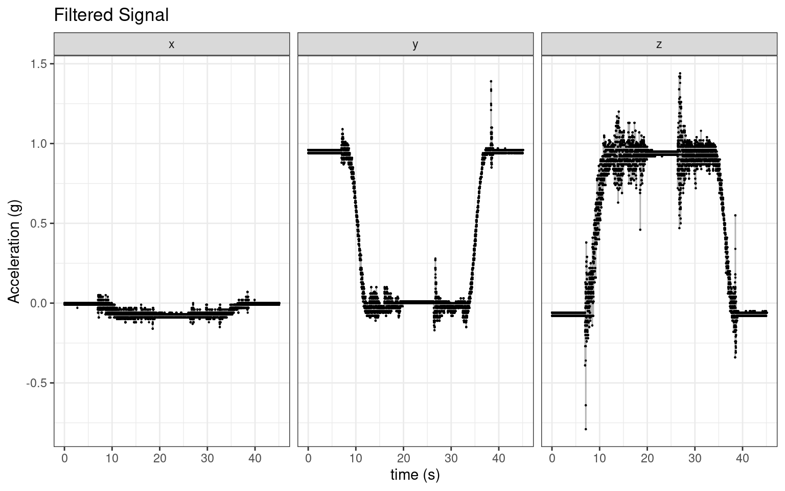
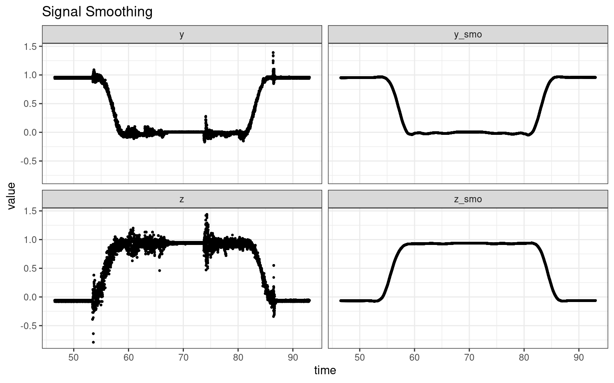
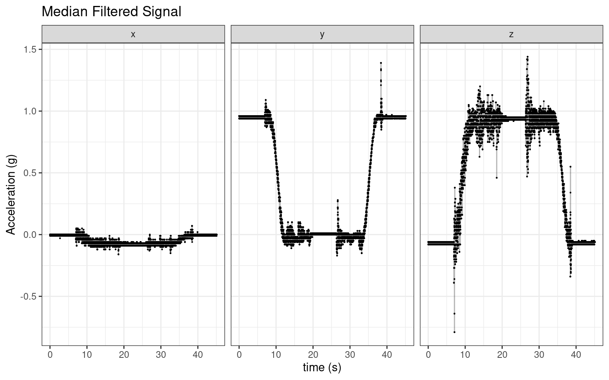
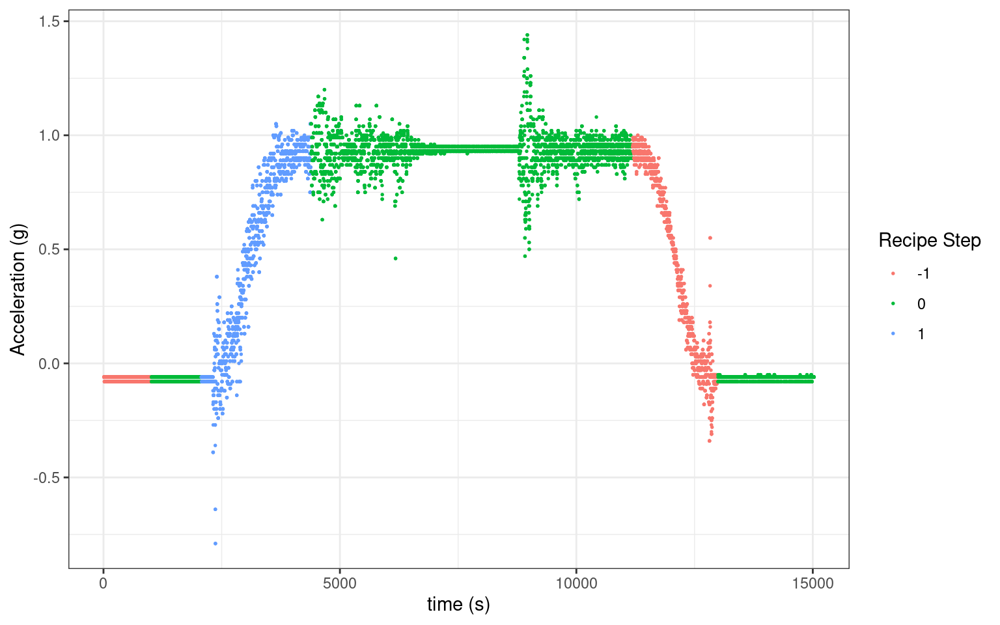
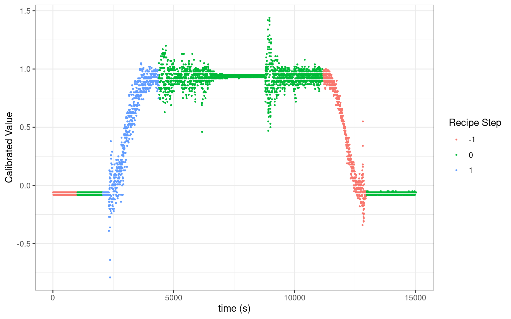
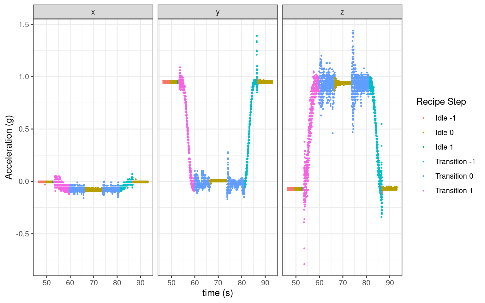

pre_proc_tbl <- function(file_name) {
d <- read_table(str_glue("../data/{file_name}.txt"),
col_types = cols(.default = "character", "X6" = col_skip()),
skip = 10)
col_names <- c("time", "x", "y", "z", "tilt_fc", "tilt_tw")
d <- set_names(d, col_names)
d <- d |>
mutate_if(is.character, .funs = as.numeric) |>
mutate(time = as.numeric(time),
time = lubridate::milliseconds(time)) # for modeling, not for plotting
d <- d |> tidyr::drop_na()
}2 Preprocessing Methods
3 Signal Data
The function that we will use to do the initial cleaning:
The function to plot the signal:
plot_ad <- function(tbl) {
tbl |>
pivot_longer(c("x", "y", "z")) |>
mutate(time = seq_along(time)/1000) |> # in ms
ggplot(aes(time, value)) +
geom_point(size = 0.1) +
geom_line(alpha = 0.3) +
facet_wrap(~name) +
labs(x = "time (s)",
y = "Acceleration (g)")
}Here is what a generic signal looks like for one complete cycle.
Note: The measurement units are in g’s, but I will keep the designation as “value” since I am not using this explicitly.
d <- pre_proc_tbl("2023-06-10_garagedoor-1")
d |>
plot_ad() +
labs(title = "Accelerometer Signal (Triaxial)")
The x and y signals have similar dynamics.
When the door moves about the corner track, the accelerometer tilts at a constant rate. This constant rate of tilt would lead to exponentially decaying or growing solutions, which is consistent to the above signal.
The tilt of the garage door, denoted by ((t)) can be expressed by a the following first order differential equation:
\[ \frac{d\theta}{dt} = f(\theta, G, t)\ \]
where (f(, G, t)) represents the function describing the dynamics of the garage door, and G is the geometry of the system.
For the simplest case of tilting about the origin (ignoring the geometry),
\[ \frac{d\theta}{dt} =\dot{\theta}\ = \theta \] the solution is:
\[ \theta \ = e^t \]
4 Median Filter
The data has irregular spike patterns caused by the movement of the curved door arm. These serve no purpose other than to contaminate the signal, and therefore are removed.
4.0.1 Test Filter
The goal here is to simulate data with known spikes to verify the filter.
set.seed(123)
t <- seq(0, 10, length.out = 1000)
imp_sig <- rpois(length(t), lambda = 0.1)
imp_sig_damp <- imp_sig * 0.01
signal <- exp(0.2 * -1*exp(-t)) + imp_sig_damp
mmed <- function(x,n=9){runmed(x,n)}
signal_fil <- mmed(signal)
d_med <- tibble(
Original = signal,
Filtered = signal_fil
) %>%
mutate(t = seq_along(Original)) %>%
pivot_longer(cols = c(Original, Filtered)) |>
mutate(name = fct_relevel(name, c("Original", "Filtered")))
d_med |> ggplot(aes(t, value)) +
geom_point() +
facet_wrap(~name) +
labs(title = "Median Filter Test on a Gompertz Curve")
4.0.2 Filter Data
d <- d |> mutate(across(c(x, y, z), ~mmed(x = ., n = 5)))
d |>
plot_ad() +
labs(title = "Median Filtered Signal")
5 Grenerate Virtual Recipe Steps
Below is an automated procedure that cleans and segments the signal into “explainable” parts. It is easy to visualize the idle, torsion coil, and impulse responses from the signal.
d <- d |>
mutate(z_smo = loess(z ~ time, span = 0.1)$fitted,
y_smo = loess(y ~ time, span = 0.1)$fitted)
ts_data <- d |> pull(z_smo) |> ts()
d |>
pivot_longer(c(z, z_smo, y, y_smo)) |>
ggplot(aes(time, value)) +
geom_point(size = 0.5) +
facet_wrap(~name) +
labs(title = "Smoothed Signal")
5.1 Extract Torsion Coil Response
I am using a machine learning method to isolate the up and down tilts (slopes), which are the torsion coil unwinding and winding scenarios.
import statsmodels.api as sm1
import numpy as np
import pandas as pd
import matplotlib.pylab as plt
from sklearn import linear_model, datasets
# Return the t-statistic for a given parameter estimate.
def tValLinR(close):
# tValue from a linear trend
x = np.ones((close.shape[0], 2))
x[:, 1] = np.arange(close.shape[0])
ols = sm1.OLS(close, x).fit()
return ols.tvalues[1]
def getBinsFromTrend(molecule, close, span):
'''
Derive labels from the sign of t-value of trend line
output includes:
- t1: End time for the identified trend
- tVal: t-value associated with the estimated trend coefficient
- bin: Sign of the trend
The t-statistics for each tick has a different look-back window.
- idx start time in look-forward window
- dt1 stop time in look-forward window
- df1 is the look-forward window
- iloc ?
'''
out = pd.DataFrame(index=molecule, columns=['t1', 'tVal', 'bin', 'windowSize'])
hrzns = range(*span)
windowSize = span[1] - span[0]
maxWindow = span[1] - 1
minWindow = span[0]
for idx in close.index:
idx += maxWindow
if idx >= len(close):
break
df_tval = pd.Series(dtype='float64')
iloc0 = close.index.get_loc(idx)
# if iloc0+max(hrzns) > close.shape[0]:
# continue
for hrzn in hrzns:
dt1 = close.index[iloc0 - hrzn + 1]
df1 = close.loc[dt1:idx]
df_tval.loc[dt1] = tValLinR(df1.values) # calculates t-statistics on period
dt1 = df_tval.replace([-np.inf, np.inf, np.nan],
0).abs().idxmax() # get largest t-statistics calculated over span period
# print(df_tval.index[-1])
# print(dt1)
# print(abs(df_tval.values).argmax() + minWindow)
out.loc[idx, ['t1', 'tVal', 'bin', 'windowSize']] = df_tval.index[-1], df_tval[dt1], np.sign(df_tval[dt1]), abs(
df_tval.values).argmax() + minWindow # prevent leakage
out['t1'] = pd.to_datetime(out['t1'])
out['bin'] = pd.to_numeric(out['bin'], downcast='signed')
# deal with massive t-Value outliers - they dont provide more confidence and they ruin the scatter plot
tValueVariance = out['tVal'].values.var()
tMax = 20
if tValueVariance < tMax:
tMax = tValueVariance
out.loc[out['tVal'] > tMax, 'tVal'] = tMax # cutoff tValues > 20
out.loc[out['tVal'] < (-1) * tMax, 'tVal'] = (-1) * tMax # cutoff tValues < -20
return out.dropna(subset=['bin'])
idx_range_from = 5
idx_range_to = 10
df0 = pd.Series(r.ts_data)
span = [idx_range_from,idx_range_to,1] # [3,10,1] = range(3,10)
df1 = getBinsFromTrend(df0.index, df0, span)
tValues = df1['tVal'].valueslibrary(reticulate)
d_f <- py$df1 |>
rownames_to_column("id") |>
unnest(tVal)
d_fmerg <- d |>
rownames_to_column("id") |>
left_join(d_f) |>
tidyr::fill(bin, .direction = "downup") |>
mutate(id = as.numeric(id)) |>
na.omit() |>
mutate(run_id = consecutive_id(bin)) |>
group_by(run_id) |>
mutate(bin = ifelse(n() < 1000, 0, bin))
d_fmerg |>
ggplot(aes(id, z, col = as.factor(bin))) +
geom_point(size = 0.3) +
labs(x = "time (s)",
y = "Calibrated Value",
col = "Recipe Step")
Here is the nomenclature:
0 = horizontal or vertical position
-1 = torsion coil winding
1 = torsion coil unwinding
5.2 Extract Door Idle Response
The door can be idle up or down, and I am fitting a simple dependent mixture model next.
library(depmixS4)
set.seed(123)
hmm_model <- depmixS4::depmix(data = d_fmerg, nstates = 2, y_smo~y)
hmm_fit <- fit(hmm_model)#> converged at iteration 21 with logLik: 40562# hmm_fit@transition
# plot(ts(posterior(hmm_fit, type = "smoothing")), ylab = "probability", frame = FALSE)5.3 Final Results
d_fmerg_final <- d_fmerg |>
ungroup() |>
bind_cols(smo_prob = posterior(hmm_fit, type = "smoothing")[,1]) |>
mutate(bin_hmm = ifelse(smo_prob > 0.999, "Transition", "Idle")) |>
mutate(run_idle_id = consecutive_id(bin_hmm)) |>
group_by(run_idle_id) |>
mutate(numbers = n(),
bin_hmm = ifelse(n() < 2000 , "Transition", bin_hmm)) |>
mutate(recipe_step = paste(bin_hmm, bin))In this example, you could see the unwinding the torsion coil (pink, door going up) generates a distinct signature compared to the opposite direction (green, door coming down).
d_fmerg_final |>
pivot_longer(c(x, y, z)) |>
ggplot(aes(time, value, col = as.factor(recipe_step))) +
geom_point(size = 0.3) +
facet_wrap(~name) +
labs(x = "time (s)",
y = "Acceleration (g)",
col = "Recipe Step")